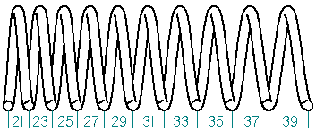

Helix Options dialog box (synchronous environment)
Specifies the options for creating a helical protrusion or cutout.
- Helix Method
-
Specifies the method used to define the helix parameters.
-
Axis Length & Pitch
-
Axis Length & Turns
-
Pitch & Turns
-
- # Turns
-
Specifies the number of turns for the helix.
- Pitch
-
Specifies the pitch for the helix.
- Right-Handed
-
Specifies the helix to turn in a right-handed manner.
- Left-Handed
-
Specifies the helix to turn in a left-handed manner.
- Taper
-
Specifies information about the helix taper.
- Method
-
Specifies the method used to define the helix taper.
-
None
-
By Angle
-
By Radius
-
- Angle
-
Specifies the taper angle. This option is available only when the Method is set to By Angle.
- Inward
-
Causes the helix to taper inward. This option is available only when the Method is set to By Angle.
- Outward
-
Causes the helix to taper outward. This option is available only when the Method is set to By Angle.
- Start
-
Specifies the start radius for the helix taper. This option is available only when the Method is set to By Radius.
- End
-
Specifies the ending radius for the helix taper. This option is available only when the Method is set to By Radius.
- Pitch
-
Specifies whether the pitch of the helix is Constant or Variable. The Pitch Ratio and End Pitch options are not available when you set the Constant option. When you set the Variable option, you can specify whether the variable pitch is defined by a ratio in relation to the Start Pitch value, or you can specify an End Pitch value.
When you specify the Start Pitch and End Pitch value for a variable pitch helix, the measured distance from the start of the helix to the end of the first turn will not match the Start Pitch value you type, and the measured distance from the start of the last turn to the end of the helix will not match the value you type for the End Pitch value.
This is because a variable pitch helix in Solid Edge is calculated as a continuously variable helix. For example, for a variable pitch helix created using the Pitch and Turns option, where the Start Pitch (SP) is 20 millimeters, the End Pitch (EP) is 40 millimeters, and the number of Turns (T) is 10, the increase in pitch value (IPV) for each turn is calculated using the formula: IPV= (EP-SP)/T or IPV=(40-20)/10 or 2.00. Half of this value or IPV/2 (1.00) is added to the Start Pitch value you specified to calculate the distance between the start point of the helix and the end of the first turn. IPV/2 (1.00) is subtracted from the End Pitch value you specified to calculate the distance between the start point of the last turn of the helix and the end of the helix. The remaining turns are calculated by adding IPV to the value of the previous turn. So the actual measured pitch value at the end point of each turn would be Turn 1=21, Turn 2=23, Turn 3=25, Turn 4=27, Turn 5= 29, Turn 6=31, Turn 7=33, Turn 8=35, Turn 9=37, and Turn 10=39.

- Pitch Ratio
-
Specifies the variable pitch ratio for a variable pitch helix.
- End Pitch
-
Specifies the ending pitch length for the helix. The actual measured distance for the end pitch will not exactly match the value you type. See the explanation above for how these values are calculated.
How do I
Construct a helical protrusion in the synchronous environmentConstruct a helical protrusion or cutout in the ordered environment
Construct a helical cutout
Move or edit a helix
Learn more
Constructing helical featuresLook up more details
Helical Protrusion commandHelical Cutout command
Helical Cutout/Protrusion command bar
Helical command bar
Helix Options dialog box (ordered environment)